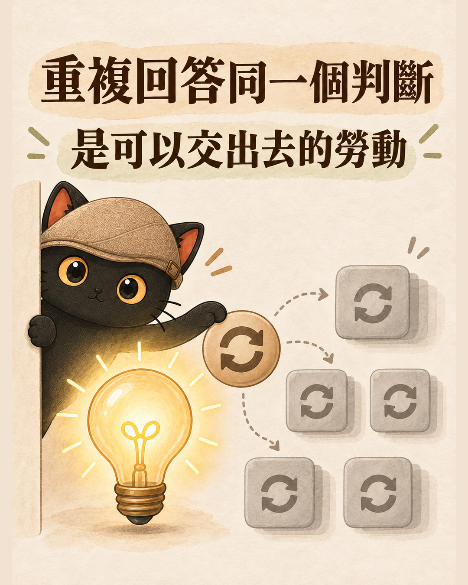
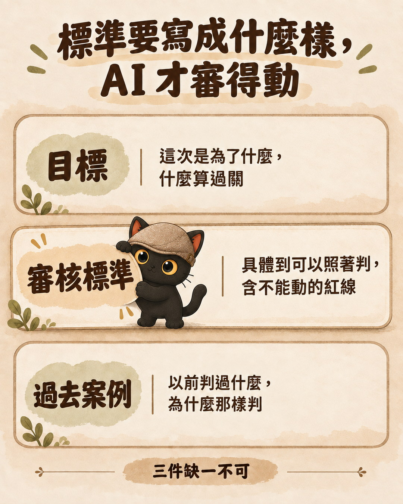
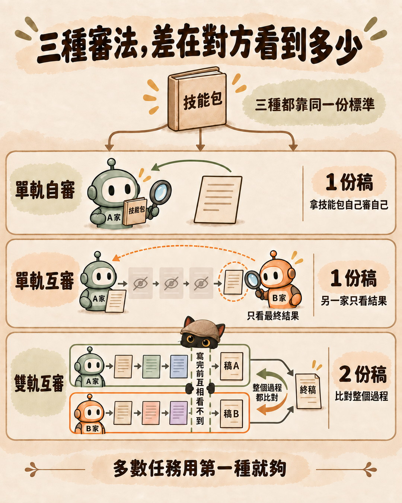
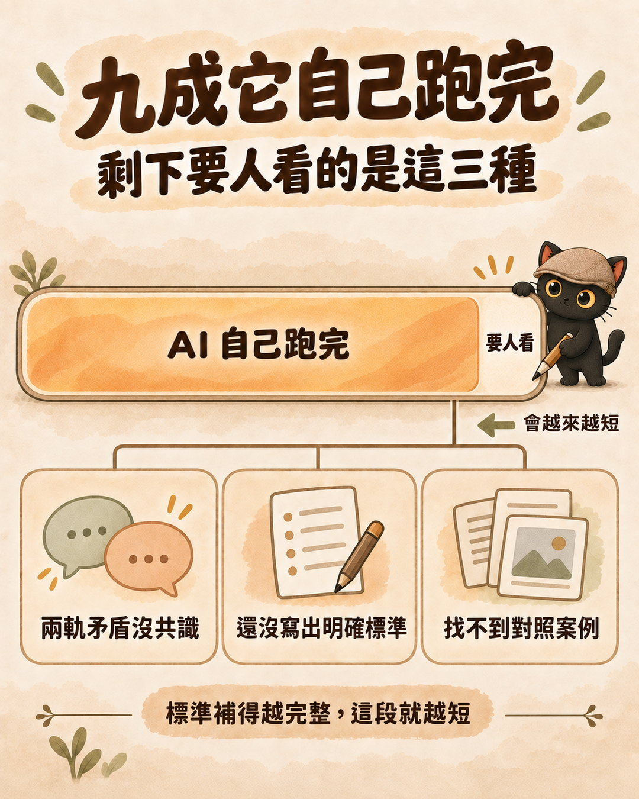

AI 產出的東西，人都要審。但我審著審著發現，我每一次的回答其實都一樣，因為我用的是同一套標準。既然是同一套，那就把標準寫清楚交給它，讓它自己檢查自己。這篇講我怎麼把這件事做成一套跑得完的流程，從一家 AI 的單軌自審，到 Claude 與 Codex 兩家的雙軌互審。
AI 每做一件事就停下來問你，而你發現自己一直在重複回答同樣判斷的人。已經會找第二個 AI 幫忙看，但兩家各說各話、不知道怎麼收斂的人。想把自己的專業判斷標準交給 AI 執行的顧問、講師、一人公司。
一份「標準要寫成什麼樣 AI 才審得動」的三件清單、單軌自審的完整格式、雙軌互審 Loop 的五個步驟、兩家意見打架時的三種收斂邏輯，還有剩下那一點為什麼還是要人看。文末有可以直接複製的提示詞。
AI 每問我一次，我的回答其實都一樣
我用 AI 做事的時候，它很習慣做完一段就停下來問我：這樣可以嗎、要不要改、要不要往下走。
一開始我覺得這樣很好，很負責。後來累積了幾十次之後，我把自己的回答攤開來看，發現一件事：我的回答幾乎都一樣。
因為我用的是同一套標準。這段話該不該留，我看的永遠是那幾件事：它有沒有講到為什麼、它會不會跟前面那條規則打架、拿掉之後會不會出事而且出事時看不出原因。我不是每次都在重新想，我是每次都在重播同一個判斷。
重複回答同一個判斷，是可以交出去的勞動
判斷只發生一次，就是我第一次想清楚那套標準的時候。後面每一次回答，都是把它拿出來再放一遍。

把標準交給它，讓它自己檢查自己
我後來對 AI 講的那句話大概是這樣：這些我之前都講過了，你應該自己檢查自己，不要每一步都來問我。
聽起來像抱怨，但它其實是一個可執行的要求。要讓它成立，我得先把「我之前都講過」的那些東西，從我腦袋裡搬出來，變成一份它讀得懂的東西。
這就是整套方法的起點。這一步做的事情，是把我原本口頭在做的判斷，寫成它可以照著跑的標準。
標準要寫成什麼樣，AI 才審得動
我試過只丟一句「幫我檢查一下」，結果它回我一堆客套話。也試過丟一份很長的規範，結果它挑最好挑的講。
實際跑下來，缺一不可的是三件：
| 要給它什麼 | 沒有的話會怎樣 |
|---|---|
| 目標：這次審查是為了什麼、什麼算過關 | 它會自己發明標準，通常是「看起來比較整齊」 |
| 審核標準：具體到可以照著判的條件，包含絕對不能動的紅線 | 它會挑安全的講，避開真正該判的地方 |
| 過去的案例：以前判過什麼、為什麼那樣判 | 同一個情況它每次判得不一樣 |
第三件最容易被忽略，但它是讓 AI 判得穩的關鍵。案例的用途是對齊尺度，讓它知道以前遇到類似情況我怎麼判。給法很簡單：挑三到五則你以前判過的，每則寫兩行，「當時的情況」加「我怎麼判、為什麼」。不用寫成漂亮的文件，寫成它讀得懂的紀錄就好。
「具體到可以照著判」是什麼意思，看我自己那套就知道。
它的第一條是一個分類動作：先判斷這份東西屬於哪一類。內容（文章、逐字稿、會議記錄）絕對不動，基礎設施（規則檔、技能包、流程、腳本、設定檔）才進審查，判不準的時候一律當內容處理。這一條寫下來之後，AI 就不會再問我「這個要不要幫你順一下」。
接著是產出格式，四段，少一段就不算審完：
- 分流判定：這份東西屬於哪一類，一句話。
- 問題與處置清單：每項寫「問題 → 為什麼 → 具體處置」。只寫問題不寫處置的，不算一項。
- 絕不動清單：逐條寫，每一條後面加括號註明理由。
- 結論：判定加上前後對比，再加覆蓋證據，也就是它到底讀了哪幾節、抽了哪幾段、跟哪份正本比對過。
第三段是這份格式的重點。多數人叫 AI 檢查，只會拿到「我建議改這些」。你真正需要知道的是它決定不動的那些，它知不知道為什麼不能動。沒有這一段，你無法分辨它是判斷過才留，還是根本沒看到。

- 規則檔越寫越長，AI 有照做嗎？ 把標準寫下來只是第一步。那篇盤了我自己 220 條規則，真正有機制在執行的只有 24 條，講的是寫下來之後怎麼讓它真的生效。
單軌自審：一家 AI 拿著標準自己審自己
標準寫好之後，最輕的一種跑法就是讓同一個 AI 做完自己審一遍，交出那張四段的單子。
這一檔零額外成本，而且對一般任務就是完整結論，可以直接放行。這點我特別修正過，因為我一開始把自審寫成「只算前半段」，結果是每件小事都要找第二家，於是大家都不跑了。流程太重的機制會被繞過，包括被我自己繞過。
我自己的紀錄裡有兩次「一項都沒挑出來」的自審，結論都算合格。因為單子上寫得出它讀了哪些、比對了什麼、每一條為什麼留。判斷有沒有認真審，看的是覆蓋證據。
三種審法，差在對方看到多少
三種都靠同一份標準，也就是你寫出來的那份技能包。差別在有幾份稿，以及另一家看得到哪些東西。
| 審法 | 怎麼跑 | 另一家看得到什麼 | 用在哪 |
|---|---|---|---|
| 單軌自審 | 一份稿。AI 拿著你那份標準自己審自己 | 沒有另一家 | 一般任務 |
| 單軌互審 | 一份稿。寫完才交出去 | 只看最終結果，你的產出過程它看不到 | 別人會照著做的東西、改不回來的改動 |
| 雙軌互審 | 兩份稿。兩家從頭各自獨立跑完，過程互相看不到 | 整個過程都比對，不只比對最後交出什麼 | 你明說要雙軌時、改最上層的規則主檔、跨系統的機制 |

如果你沒有像我這樣的任務分級制度，有三個問題可以自己判，任何一個答「是」就往上加一級：
- 做錯了改得回來嗎？改不回來，至少要單軌互審。
- 別人會照著這份做事嗎？會，至少要單軌互審。
- 這件事有兩種以上都說得通的做法嗎？有，跑雙軌互審。
輪數我設預設 2 輪、上限 3 輪。有個反直覺但很實在的觀察：第二輪的問題數比第一輪多，是正常的。我跑過最長的一次是五輪，問題數是五條、六條、四條、兩條、通過。第二輪比第一輪多，因為改完會生出新的問題。第三輪還在上升才是壞消息。
上限那條是一道人工閘門，第四輪起要人親自授權才准續跑，不是 AI 自己覺得還沒收斂就一直跑下去。
自己審自己會漏掉什麼，所以才有雙軌
先講清楚這一節的適用範圍：單軌自審在一般任務就是完整結論，可以放行，下面講的不是要推翻它。只有當這件事重要到你想宣稱「這份東西經過另一家檢查」的時候，資格問題才會出現。
**單軌互審就能補掉自審的盲點**，多數需要第二雙眼睛的任務停在那裡就夠。這一節講的是再往上那一階：什麼情況值得升到雙軌。 先說自審有兩個它自己看不見的地方。
第一個是盲點。它剛剛寫的東西，它會用寫的時候那套邏輯去看，而錯的地方通常就是那套邏輯造成的。
第二個是資格問題。我給自己的紅線是：要算跨家，出品的那一家跟審查的那一家就不能是同一家。這裡最容易搞混的是「家族」到底看誰，答案是看成品的作者，不看誰在執行這次審查。同一個模型審別人寫的東西，是合法主審；審自己寫的東西，不算。開幾個對話視窗、派幾個子代理，都不會讓它變成兩家。
這條我自己踩過。第一版的規格我把判定寫反了，寫成「執行審查的模型就是產出家族」，結果是 Codex 審 Claude 寫的東西時，會被判成不能當主審。這個錯是跨家審的時候被對方抓到的，不是我自己發現的。
- 怎麼設計讓兩個 AI 互審？ 那篇比較的是互審這件事可以做到多深，附三種深度各自的可複製指令。這篇談的是同一套標準要用多大力氣審、誰有資格審。
雙軌互審 Loop 怎麼跑
當這件事重要到自審不夠，我會開雙軌。我最常用的組合是 Claude 一軌、Codex 一軌，但這不是門檻：你手上只有一個 AI 也跑得起來，開兩個全新的對話，一個負責寫、一個負責審，貼同一份輸入包就是兩軌。差別只在下面會講的那條資格線。
- 同一份輸入包，寫上版本與凍結時間，兩軌拿到的東西完全一樣。
- 兩軌各自獨立跑完，寫完之前互相不准看對方的稿。這一步是整個機制成立的前提，看了就變成附和。
- 互審：兩份成品交換，各自對著標準挑對方的問題。
- 整合：由發起的那一方把兩軌併成一份。只能整合，不能裁決。
- 對家終審：整合完的終稿交給另一家看過，它判過才算完成。
第四步那句限制很重要。兩軌意見不同的時候，發起方最容易做的事就是自己選一個，然後說「我整合好了」。那等於用一句話蓋掉一個真正的分歧。
兩軌意見分歧的時候，發起的那一方只能整合，不能裁決，分歧一律列成決策點交人拍板。這個地方我刻意不讓 AI 自己決定，因為那正是它最容易替你決定的地方。
兩家意見打架的時候怎麼收斂
這是雙軌最實際的問題。兩個 AI 給了相反的建議，你要聽誰的。
| 型態 | 長什麼樣 | 怎麼收 |
|---|---|---|
| 直接對撞 | 同一項，一方說動一方說留 | 拆維度。對撞通常是兩邊在講同一件事的不同層次，拆開後兩邊都成立 |
| 方案傾向不同 | 各自主張不同做法，沒有直接衝突 | 先找共識句。兩個方案背後通常有同一個目的，把那句寫出來，再看哪個方案更接近它 |
| 拍板與審查相反 | 人已經決定的事，審查方不同意 | 不收斂，登記已知張力。記下兩方立場、誰在哪天拍板、什麼條件下要再議 |
最後一型有個條件：沒有再議條件不准登記。否則張力就變成永久豁免區，這裡開一個洞，以後什麼都能往裡面塞。
第一型我有個現成的例子。同一份東西，Codex 說「缺一份依新流程重排的執行表」，我這邊說「執行表該拿掉」。拆開之後發現那是「階段分配」與「逐分鐘排程」兩個層次，比例式的階段分配留在正文、分鐘級的排程移回各自的執行檔，兩邊都對。判這個折衷的是 Codex 自己，它在互審回合說兩邊各對一半。
九成它自己跑完，剩下要人看的是哪幾種情況
只要標準寫得夠清楚、目標明確、而且有過去案例可以參考，我自己算一算，一般的審查工作跑雙軌互審，大概九成它可以自己跑完，不用每一步都問我，而且跑得很順。
比起這個數字，更值得講的是剩下那一點。它不是隨機發生的，通常就是這三種情況：
| 什麼時候還是要人看 | 為什麼 AI 判不了 |
|---|---|
| 兩軌矛盾，收斂不出共識 | 兩邊都說得通，這是取捨不是對錯 |
| 這件事我還沒寫出明確的標準 | 它手上沒有可以照著判的依據 |
| 過去沒有可以對照的案例 | 沒有尺度可以對齊，它只能猜 |
遇到第一種，我的規則是不讓 AI 自己選邊：兩軌分歧一律列成決策點交人拍板，發起的那一方只能整合，不能裁決。
後面兩種其實是同一件事的兩面：標準還沒補完。所以這一點會隨著標準與案例累積得越完整而變少。九成不是天花板，是我現在的位置。

怎麼避免兩個 AI 互相說好話
雙軌最怕的是兩邊都很客氣。
我回頭盤點過去的紀錄，發現審查意見的採納率幾乎是 100%。那個數字看起來像品質很好，實際上它代表沒有人在判斷。A 提了意見，B 就照做，因為照做最省事。
所以我加了一張處置表，被審的那一方要逐條回話。表就三欄：建議原文、三選一、理由。每條建議三選一：採納／部分採納／不採納。不採納的必須附理由，而且理由只能是四類裡的一類：撞到紅線、決策者已經拍板過、改了會退回原本的問題狀態、成本不划算。
引用意見的時候要貼原文，不要改寫成自己的話再回應。改寫的過程，就是偷偷軟化的過程。
- 如何讓兩個不同的 AI 互相挑錯、自己訂正？ 同一套雙軌用在企劃與提案上的實例，我的政府補助提案在送出前被模擬評審打了 2/5 分。
這套方法哪一部分我有把握，哪一部分還沒有
有把握的部分：三種強度都不需要安裝任何工具。用兩個網頁版 AI 複製貼上就跑得完，命令列工具只是把搬運自動化，不是入場門檻。
沒把握的部分要講清楚。用網頁版跑雙軌，證明不了兩軌真的沒看過對方。命令列工具可以用執行順序保證互盲，網頁版只能靠人守紀律，事後拿不出證據。同樣的，也證明不了兩軌拿到的輸入完全一樣。
能做的是留痕：兩軌各開全新對話、輸入包第一行標上版本與凍結時間、先寫完的那一軌在檔案裡註明「本檔在讀對方之前完成」、兩邊的回覆整段原文存檔不要改寫。做得到這四項就標「留痕完整」，做不到就誠實標「未驗證互盲」，不要寫成跑過雙軌。
命令列工具的價值就在這裡。
今天就能開始：把你重複回答過三次的那個判斷寫下來
不用等工具，也不用先有一套完整的方法論。
回想一下最近 AI 問過你、而你的回答其實都差不多的那件事。把它寫成三行：這次要達成什麼、什麼情況算過關、絕對不能動的是哪些。然後把這三行連同要審的東西一起貼給 AI，加上這段：
跑完之後，你自己填一次處置表：每條採納、部分採納或不採納，不採納要寫理由。如果你發現自己每條都採納，就在最後寫一句「零不採納，因為＿」，把那個「因為」填出來。
多數人第一次跑到這裡會卡住。那個卡住的地方，就是你原本沒寫下來、只存在你腦袋裡的標準。把它補進去，下一次它就不用再問你了。
這套審查標準我整理成技能包了
上面講的是完整的做法，你照著做就能跑起來。我另外把它包成一個技能包，裡面多的是那些「我已經替你踩過」的部分：
它就是我自己每天在用的那一份，包含我踩過的坑跟修正過的判斷。自己用跟交給別人用是同一份規格，不是另外寫一套簡化版。
- 四段審查單、處置表、已知張力登記的可直接複製範本
- 從三個多月實際審查提煉的七種該挑的模式與四種絕不能動的，每一種附一個真實案例當佐證
- 十一條審查者自己會犯的坑，分五類，包含審完沒接下去、版號沒回寫這種很難自己發現的
- 三種意見衝突的收斂邏輯與九次跨家審的輪數統計
- 只有網頁版 AI 的人怎麼跑雙軌的入場對照表，含可複製的派工提示詞
上架資訊我會在官方 LINE 社群公告。
- 這篇提到過的
- 規則檔越寫越長，AI 有照做嗎？ 標準寫下來之後，怎麼讓它真的被執行。
- 怎麼設計讓兩個 AI 互審？ 互審可以做到多深，附可複製指令。
- 如何讓兩個不同的 AI 互相挑錯、自己訂正？ 同一套雙軌用在企劃提案上的實例。
- 再往前後延伸
- 改完規則，怎麼知道 AI 到底有沒有變乖？ 標準改完之後的下一題：怎麼驗收它真的變了。
- 叫 AI 講簡潔一點，它還是一堆廢話？ 讓 AI 自己判斷該不該寫這一段的決策階梯，是這套標準的其中一塊零件。
我是江江教練。我做的事情是幫人把腦袋裡的判斷標準，變成 AI 可以照著執行的東西。這篇講的審查方法，就是我拿自己的知識庫當實驗場跑出來的。